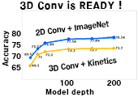

Yutaka Satoh, Ph.D.
人工知能研究センター 首席研究員
Principal Researcher, AIRC, AIST.
（兼）筑波大学大学院 理工情報生命学術院
情報理工学位プログラム 教授（連携大学院）
Professor, University of Tsukuba.
E-mail: yu.satou AT aist.go.jp
Topics
 筑波大学連携大学院「佐藤研究室」では，修士および博士課程の学生を受け入れています．
産総研の先端的な研究環境で学びつつ筑波大学の学位を取得できます．
全国の大学・高専（専攻科）等からの受験を歓迎しています．
詳しくは
こちら
をご覧ください．
筑波大学連携大学院「佐藤研究室」では，修士および博士課程の学生を受け入れています．
産総研の先端的な研究環境で学びつつ筑波大学の学位を取得できます．
全国の大学・高専（専攻科）等からの受験を歓迎しています．
詳しくは
こちら
をご覧ください．
まずは，yu.satou AT aist.go.jp （ATを@に変更して使用してください。）まで遠慮無くご相談下さい．
Admissions: Cooperative Graduate School Program (master's & doctoral course), University of Tsukuba. Please see here.
産総研論文賞2022を受賞しました．「Pre-training without Natural Images」(IJCV論文)
FY2022 AIST Best paper award
→産総研論文賞
産総研論文賞2019を受賞しました．「Can Spatiotemporal 3D CNNs Retrace the History of 2D CNNs and ImageNet?」(CVPR2018論文)
FY2019 AIST Best paper award
→産総研論文賞
→CVPR2018 open access
プレス発表：「直射日光下でのパターン投影による高速形状計測に成功」
キネクトのようなパターン光投影型形状計測を直射日光下でも可能にしました．
→産総研プレスリリース
→CVPR2017 open access
Press release: Please see here and here.
科学技術分野の文部科学大臣表彰
「若手科学者賞」
を受賞いたしました．
Minister's Prize: The Young Scientists' Prize, The Commendation for Science and Technology by the Minister of Education, Culture, Sports, Science and Technology.
→受賞
Research Keywords
コンピュータビジョン - computer vision systems
画像認識・理解 - image recognition and understanding
動画像認識 - video recognition
パターン認識 - pattern recognition
機械学習 - machine learning
ディープラーニング - Deep Learning
画像特徴抽出 - image feature extraction
ロバスト画像処理 - robust image processing
三次元画像取得・処理 - 3D imaging
全方向ステレオカメラ - stereo omni-directional camera system
ロボットビジョン - robot vision systems
VR/MR/AR - Virtual Reality systems
Themes & Key Papers
全文献リストはこちら，Paper list is here.
DNNを活用した静止画像／動画像解析（2014～）
Deep Neural Network based Image / Video Analysis
|
 |
Awards
Detail your awards and honors.
Society Activities
List professional society roles and memberships.
Academic Affairs
Outline teaching, committee work, and service.